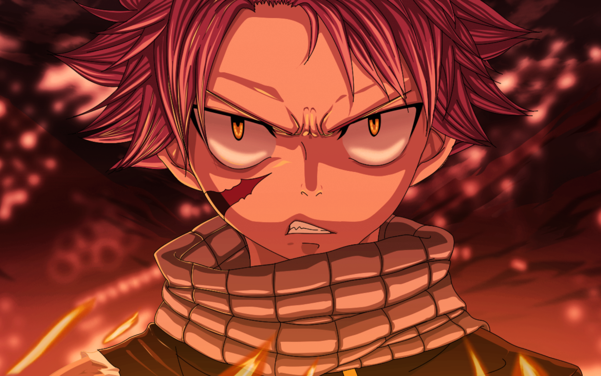
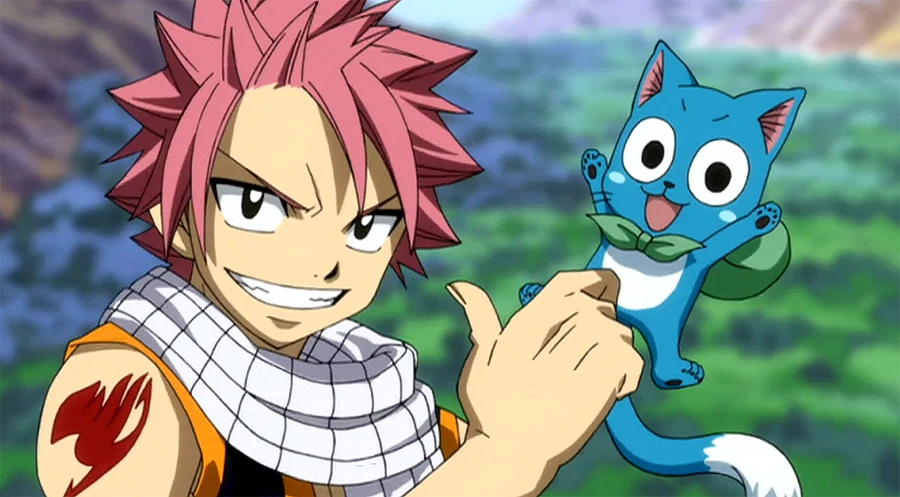
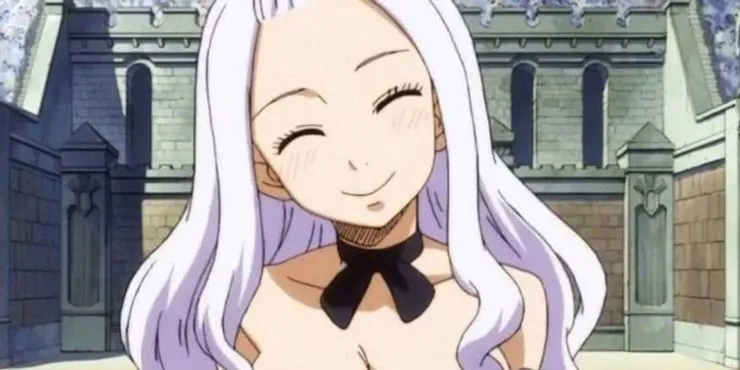
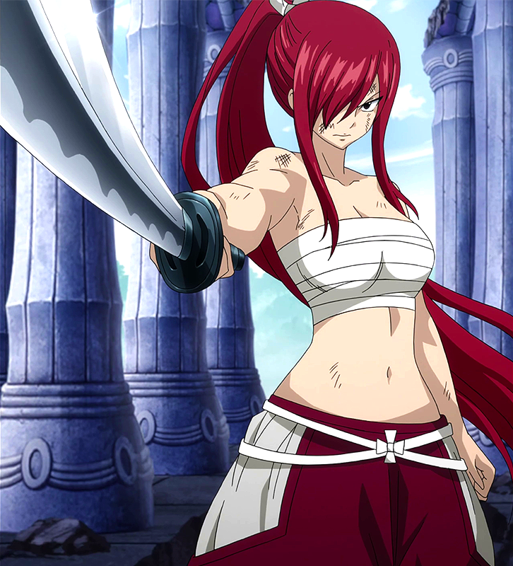
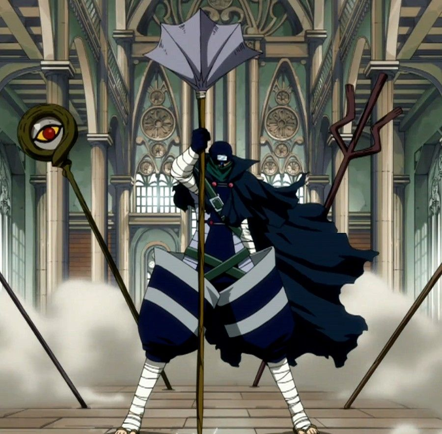
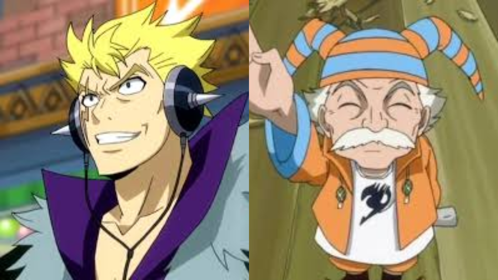

Anime Qcm
Ceci est un QCM sur fairytail !
Connaissez-vous fairytail sur le bout des doigts ?
A vous de jouer pour avoir 10/10 :D .
Pour n'avoir aucun spoil, vous n'aurez pas les réponses a la fin du quizz.
Commencez le test maintenant !

Quel est ce personnage ?
Jellal Fernandes
Gray Fullbuster
Natsu Dragneel
Elfman Strauss

Où natsu a-t-il trouvé happy ?
Dans une riviere
Dans un oeuf en forêt
Dans un oeuf de dragon
Scéllé dans une montagne

Qui est Mirajane Strauss ?
La mère de natsu
la fille de makarov
la soeur de Lisanna
la soeur de Alzack

Quel est le passé d'Erza Scarlett ?
Elle a tué ses parents
Elle a vécu une enfance normale
Elle a été élevée par un dragon
Elle a été esclave

Qui est véritablement Mistgun ?
Jellal Fernandes
Gajil
Le père de Natsu
Le frère de Makarov
Qu'est réellement Loki ?
Un chasseur de dragon
Un dragon
Un esprit
Un humain

Quel est le lien entre Luxus et Makarov ?
Le fils de Makarov
Le petit-fils de Makarov
Un esprit de Makarov
Le neuveu de Makarov
Qui a élevé Natsu ?
Igneel, un dragon
Makarov, maître de Fairy Tail
Oul, une mage
Zeref
Quand Igneel et tous les autres dragons ont-ils disparu ?
Le 5 mai
Le 7 juillet
Le 3 mars
Le 15 juin
Que fait tout le temps Grey ?
Il boit
Il mange de la glace
Il se bat avec Makarov
Il se déshabille tout le temps